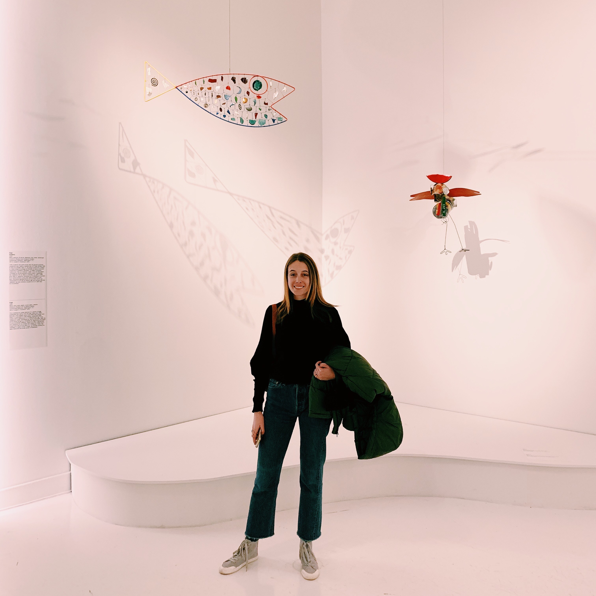

Haley Oleynik (she/her)

About me
Hi there, I’m Haley Oleynik! I’m currently a PhD student at the University of British Columbia Institute for the Oceans and Fisheries under the advisement of Murdoch McAllister.
I received my BA in biology and sociology from Colby College in 2015 and my MS in marine studies from the University of Delaware College of Earth, Ocean, and the Environment in 2020 under the advisement of Aaron Carlisle.
My undergraduate research focused on how environmental change and management have influenced the social structure and dynamics of the Lobster fishing industry in Maine.
After graduating Colby I worked as a North Pacific Groundfish Observer for the National Marine Fisheries Service where I lived on commercial Pollock and Rockfish fishing vessels in the Bering Sea and Gulf of Alaska and collected data on catch, bycatch, and fishing effort to support stock assessment science.
My work in Alaska sparked my interest in fish population dynamics and lead me to pursue my Master’s at the University of Delaware. My Master’s research focused on fish community dynamics and associated environmental drivers in the Delaware Bay using a long-term, state run trawl survey.
After graduating from UD I completed a NOAA Sea Grant Knauss Marine Policy Fellowship in 2021 working with the NOAA Fisheries Office of Science and Technology National Stock Assessment Program.
My research interests include quantitative fish ecology, population modeling, Bayesian fisheries assessment, and fisheries management evaluation. My PhD research will likely focus on understanding the impacts that top marine predators have on economically important fish species through exploration of multispecies interactions and time varying natural mortality in stock assessment models.
I’m passionate about making science, particularly quantitative and technical, inclusive and accessible to all. And I’m an enthusiast and perpetual student of R. As I learn, I will share. Please feel free to reach out! I’m always happy to chat about R, fisheries, modeling, Knauss, UD, UBC, etc.